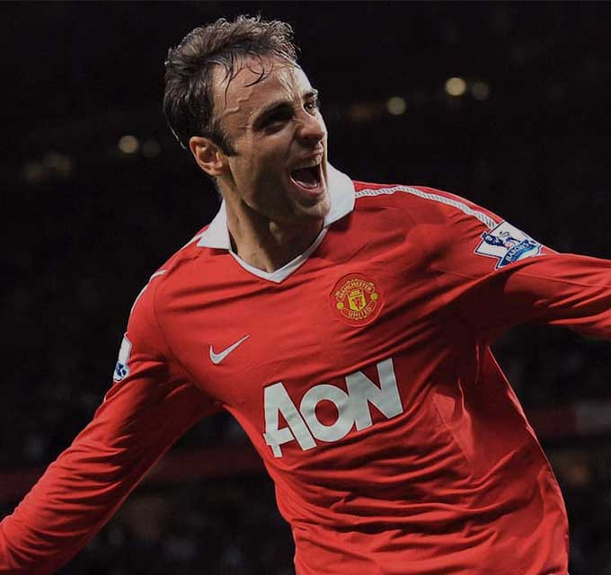

Димитър Иванов Бербатов е български футболист. През сезон 2010/11 получава Златна обувка на Висшата лига (заедно с Карлос Тевес), и става голмайстор на първенството с 20 отбелязани гола. С Юнайтед печели и Световното клубно първенство на ФИФА през 2008 г. Той е футболист № 1 на годината на България рекордните седем пъти (2002, 2004, 2005, 2007 – 2010).Капитан на националния отбор по футбол на България от 2006 до 2010 г., когато се оттегля от него. Бербатов има 48 отбелязани попадения за българския национален отбор, като по този показател е рекордьор заедно с Христо Бонев. Започва кариерата си през 1991 г. в юношеския отбор на Пирин (Благоевград). През 1998 г. се премества в юношеския, а през 1999 година – в мъжкия отбор на ЦСКА (София). От 2001 година играе в Байер Леверкузен. През май 2006 година преминава в английския Тотнъм, а през септември 2008 година преминава от Тотнъм в Манчестър Юнайтед. От август 2012 до 2014 г. играе във ФК Фулъм, а през сезон 2014/2015 – в АС Монако. През юни 2015 година Монако и Димитър Бербатов се разделят. С Манчестър Юнайтед печели два пъти титлата в Английската висша лига и споделена златна обувка за най-добър реализатор в първенството.На 24 февруари 2013 г. става първият български футболист, изиграл 200 мача в английското първенство. Общо за целия си престой в Англия има изиграни 305 мача и 122 отбелязани попадения.
